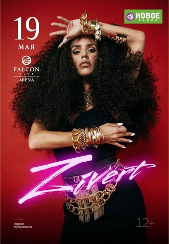
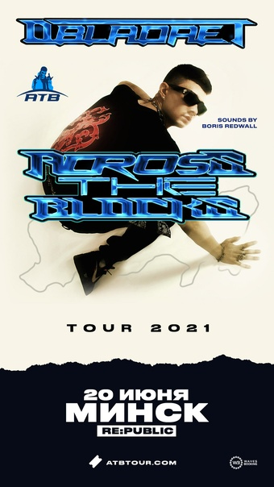
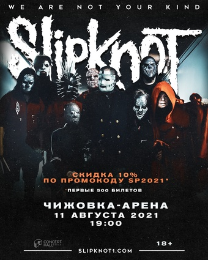
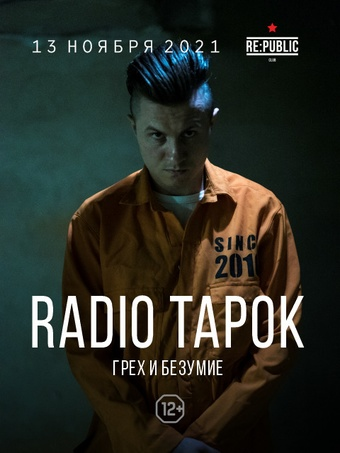

Любишь музыку и у тебя есть свободное время? Посети концерт!
В крупных городах постоянно проводятся какие-то концерты, и далеко не все они стоят как сбитый боинг. Почему бы не посетить хотя бы один из них?
В этой статье мы рассмотрим некоторые концерты, которые должны пройти в ближайшее время в Минске
[12+] Zivert. 19 мая, среда
Наверное, нет ни одного человека, слушаюего своременную музыку, который не слышал хотя бы одну песню этой российсой поп-исполнительницы. Она стала известна в 2017 году с песнями «Чак» и «Анестезия». Широкую популярность получила в конце 2018 года после выхода трека «Life».
Выступать она будет в Falcon Club Arena в 19:00
Билеты на её концерт можно купить здесь
Однако стоит ометить, что посетить концерт Zivert - не самое дешёвое удовольствие. Билет обойдётся вам в 114 BYN
Если вы хотите вспомнить её песни, то можете послушать отрывки из нескольких самых известных ниже:
Кредо
ЯТЛ
Многоточия
[18+] Дети Rave. 17 июня, четверг
Если внутри вас неисчерпаемое количество энергии и вы любите рейв, то этот вариант будет вам интересен. Дети Rave - это злое и весёлое лицо русской электроники, под чьи треки одновременно хочется смеяться, рыдать и ломать себе рёбра в самом центре неостановимого слэма.
Группа выступит в Re:Public также в 19:00
Купить билеты на концерт вы моежете здесь
Дети Rave готоры выступить за более приятную сумму. Так, цена за билет варьируется от 40 BYN до 75 BYN
Ниже размещены отрезки из их самых известных песен:
Турбо-пушка
Факела
Магнитола
[18+] Obladaet 20 июня, воскресенье
Вам по душе хип-хоп и рэп? Вы любите русские песни? Вероятно, вам понравится этот вариант
OBLADAET ежегодно занимает лидирующие позиции в индустрии, филигранно меняя стили не отходя от собственного и неповторимого звучания. Прогрессивность звука влечёт за собой развитие всех сфер деятельности — выступления Назара с каждым годом показывают новый уровень шоу и стремительно растут по посещаемости, ежегодно увеличивая количество слушателей на мероприятиях.
Исполнитель выступит в Re:Public и, как и остальные, в 19:00
Купить билеты на концерт вы моежете здесь
Цена билета порадует, ведь она начинается с 40 BYN и заканчивается 65 BYN
Стоит иди на их концерт или нет? Решите, послушав его песни (указан оригинальный исполнитель и название песни):
Wrong
I AM
Kenny
[18+] Skipknot. 11 августа, среда
Любите тяжёлую музыку? Тогда это точно ваш вариант! Slipknot являются бладателями Грэмми и звания «одной из лучших групп в мире» по версии журналов Kerrang и NME
«Наше новое видео набрало 4,7 миллиона просмотров за 10 секунд. Рассказывайте мне после этого, что рок и метал умерли!» – говорит солист группы Кори Тейлор
Группа выступит в Чижовка-Арене опять же в 19:00
Купить билеты на концерт вы моежете здесь
Однозначно назвать цену за билеты высокой или низкой не получится. Цены начинаются с60 BYN, что является вполне приемлемой суммой, и доходят до 300 BYN, что является огромной суммой для среднестатестического белоруса
Стоит иди на их концерт или нет? Решите, послушав их песни:
Psychosocial
Before I forget
Duality
[16+]* Radio Tapok. 13 ноября, суббота
*На афише указано ограничение 12+, но лица, моложе 16 лет, допускаются только в сопровождении совершеннолетних
Ещё один вариант для ценителей рока и метала
Radio Tapok создаёт каверы на известные песни, в основном рок и метал направления (однако есть иные), сохраняя при этом характерный стиль оригинального исполнителя. Приходя на концерт Radio Tapok, вы по сути, получаете несколько мини-концертов мировых групп. Также у исполнителя есть несколько собственных песен
Группа выступит в Re:Public в 20:00
Купить билеты на концерт вы моежете здесь
У билетов приемлемая цена, которая стартует с 39 BYN и заканчивается на отметке в 84 BYN
Стоит иди на их концерт или нет? Решите, послушав их песни:
Linkin Park - Numb
Rammstein - Radio
AC/DC - Highway to Hell